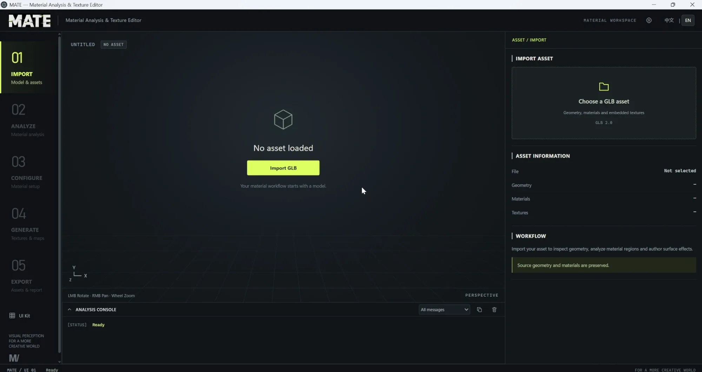
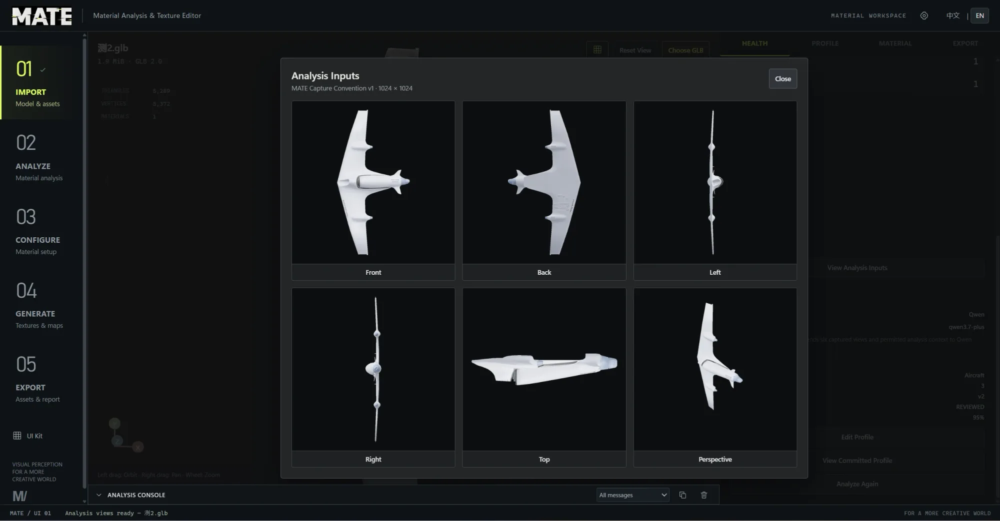
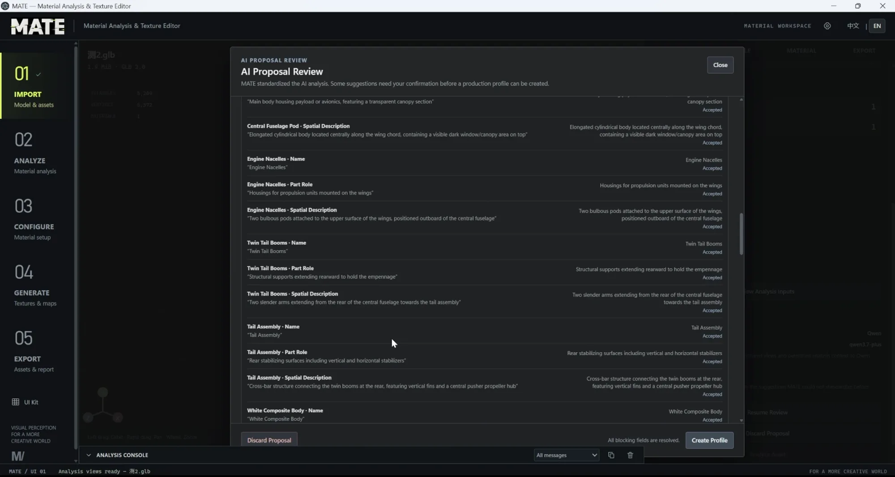
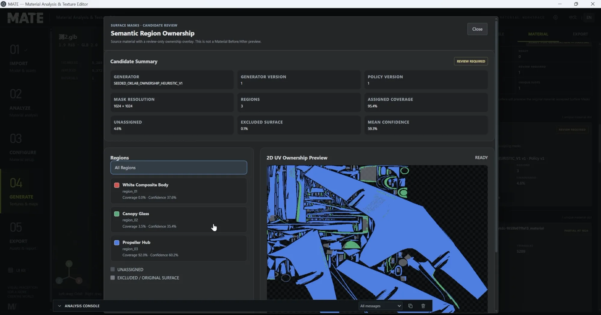
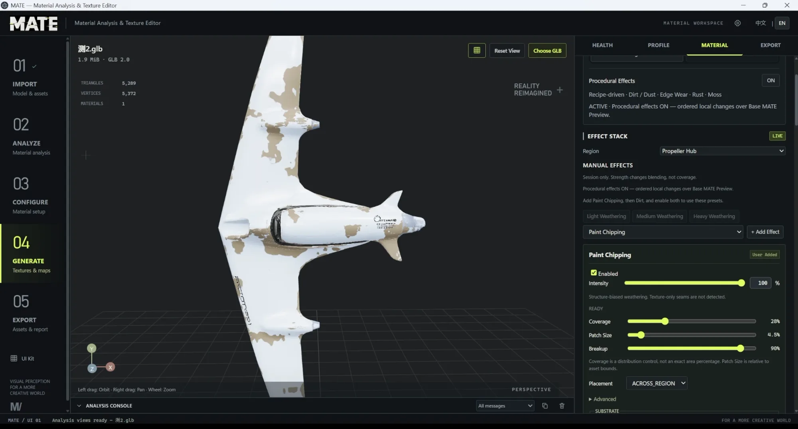
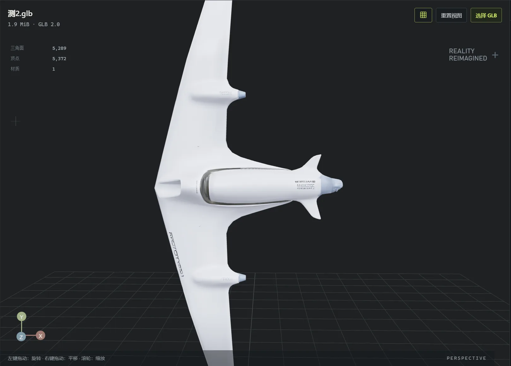
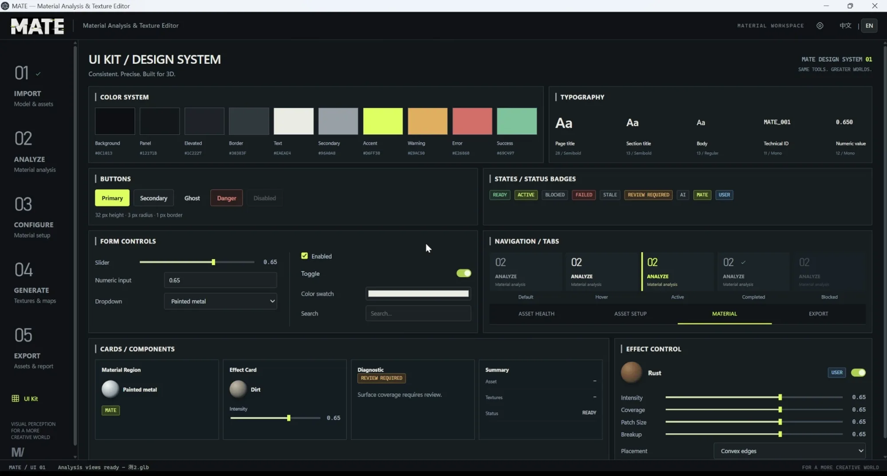
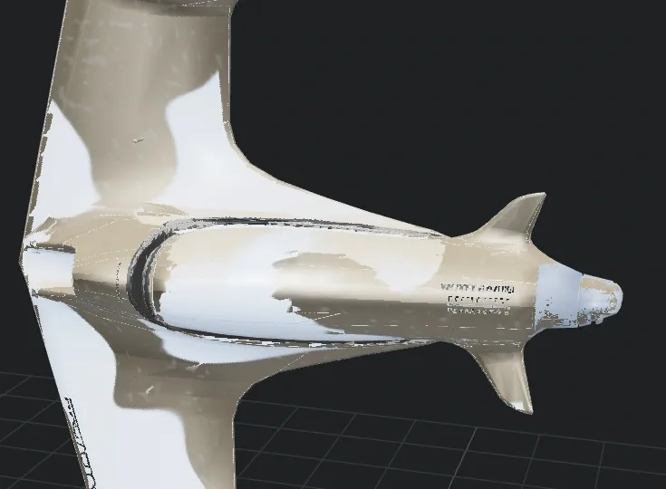
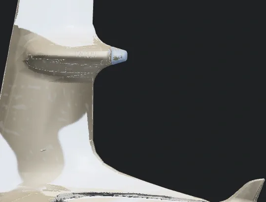

MATE
Material Analysis & Texture Editor — a desktop tool for the moment after generation, when an artist wants to keep shaping a surface instead of rolling the dice again.
- Role
- Product and workflow design, system planning, UI, validation
- Year
- 2026 — ongoing
- Built with
- Electron, React, Three.js, an external vision model
- Status
- Functional prototype; texture output in development

From model import to a controlled material.
The AI sees many surfaces. The model has one slot.
When I worked with AI-generated models, materials felt unpredictable. I could not take one region of a surface and push it towards what I had in mind.
An aircraft test asset made the problem concrete. White paint, glass, sensor housings and decals read as separate regions — but shared a single material slot. Recognising them did not tell me how to edit them independently.
So MATE — Material Analysis & Texture Editor — concentrates on what happens after analysis. Before anything runs, the artist confirms three things: the intended material, the real target it will affect, and whether the data supports the operation. The AI offers a starting proposal; the person keeps the final say.
Reviewable proposals
Terminology and parameters are normalised and shown for confirmation. Natural language is never an execution command.
Inspectable scope
The link between regions, model targets, UVs and masks is explicit. A visual label alone is not enough.
Repeatable adjustment
Edit parameters, toggle layers and compare with the original, all within the same session.
A clear input and a next step, at every stage.
- 01
Import
Open a GLB; inspect the model and its asset health.
- 02
Analyze
Capture six views; review the AI’s region and material suggestions.
- 03
Configure
Confirm real targets and local regions; check bindings, UVs and masks.
- 04
Preview
Add paint chipping and dust; adjust; compare against the original.
- 05
Output settings
Choose resolution, format and channels. Baking is not complete yet.

From understanding a surface to controlling it.
A — AnalysisAI material analysis, with review built in.
Six standard views help a vision-language model interpret regions and appearance. Its output is not executed. I normalise the terms, validate the structure and move it into a material profile the artist can edit — colour, roughness, metallic response, texture intent — and then confirm.


B — BindingConfirm where to edit, then decide how.
Semantic regions are bound to real material slots. When several regions share a slot, surface masks restrict the scope, with UV checks first. Candidate masks must be previewed and accepted — and the interface keeps the uncertainty visible, so wrong assignments can be found.
This screenshot is a recorded failure: the Propeller Hub region takes 92.0% of the surface, while the White Composite Body gets 0.0%. I show it because it is the reason review exists.

C — IterationAn effect stack, not a result image.
Paint chipping and dust are separate effects that can be added, removed, switched and adjusted. Coverage, patch size, breakup and placement each control a different aspect of the surface. Intensity and coverage are deliberately not one slider.

Keep shaping the material you already have.
My interest is not another generation attempt. It is being able to keep adjusting an existing model towards the result I want.

“Less chipping, but keep the large patches.”
Coverage is adjusted separately from scale, so reducing the area does not change the patch shape.
“Add dust without losing the substrate.”
The effect layer and the exposed material are adjusted separately — colour beside roughness and metallic response.
“What is this layer actually doing?”
Toggle chipping or dust on its own, then compare with the original asset.
What it is, where it acts, whether it can run.
Uncertain AI output is handled by layered relationships, rather than asking one description to serve every responsibility.
Available targets
Nodes, mesh instances and material slots from the glTF source, giving stable identities.
Current runtime objects
Maps stable targets to live Three.js objects; checks references and lifecycle.
Can this proceed?
UV preflight, mask acceptance, versions and stale states jointly control what runs. “Indeterminate” is a valid state, not a silent pass.
Engineering the workflow, checking the image.
01How does an AI interpretation become executable data?
- Problem
- Words such as “painted” or “metal” do not map cleanly to internal categories and parameters.
- Decision
- Terminology normalisation, structured validation and human review before execution.
- Result and limit
- Analysis can still be wrong — so review is part of the design, not a workaround.
02What if several regions share one material slot?
- Problem
- Editing the shared slot changes surfaces that should be treated separately.
- Decision
- Asset structure, runtime mapping and region binding are managed separately; whole-slot edits are distinguished from local masks.
- Result and limit
- A correct binding does not imply accurate pixel segmentation. The failed mask above is the proof.
03How does a target survive material replacement?
- Problem
- Shared meshes, repeated instances and duplicate names make names or runtime IDs unreliable.
- Decision
- Identity comes from glTF source indices and scene context; the material index is left out.
- Result and limit
- Development checks support the design. They are not a guarantee for every asset.
04Why can local processing fail when UVs exist?
- Problem
- UVs can overlap, leave the 0–1 range or contain degenerate triangles.
- Decision
- A preflight runs in a Worker and reports pass, blocked or indeterminate, with reasons.
- Result and limit
- It detects and blocks. It does not repair or unwrap.
05How do late results avoid touching the current asset?
- Problem
- An earlier task can return after the asset or binding has changed.
- Decision
- Tasks carry versions, identity and cancellation; invalid results are marked stale.
- Result and limit
- Regression checks cover cancellation, late results and retry.
06How can weathering keep lettering and panel lines?
- Problem
- Test assets bake lettering, lines and shading into base colour. Replacing it weakens them all.
- Decision
- A detail-preservation control for the original coating, tested on full PBR and base-colour-only inputs.
- Result and limit
- Fine lines and decals are still checked case by case.
07Why does stronger noise not look more natural?
- Problem
- Early chipping produced large cloudy patches with weak edges.
- Decision
- Distribution, scale, edges and material response are treated separately, at several scales.
- Result and limit
- Secondary broken edges, micro-notches and seam dirt are next. A control is not proof of quality.
08Does a passing build mean the image is ready?
- Problem
- Type checks and tests cannot prove that chipping looks natural.
- Decision
- Engineering checks are separated from visual acceptance, under fixed cameras and lighting.
- Result and limit
- Naturalness, final output and performance each need their own validation.
Keep the model central and the state readable.
The viewport supports visual judgement. Stages on the left answer “where am I?”, the inspector on the right answers “what can I edit?”, and the console below explains “what happened?”. Status labels always accompany colour: Ready, Blocked, Stale, Review required.

The workflow works. Visual quality and output come next.
Close-up views make the shortcomings clear. I keep them as evidence for the next iteration rather than presenting them as final quality.


An operable material prototype
GLB import, multi-view analysis, review, region binding, UV and mask workflows, chipping and dust previews, saved output presets.
Local quality and applicability
Mask quality, coating fidelity, close-up shapes and rust interaction, across more than one asset.
Real texture output
Texture baking, PBR map output and packaging. The output options are saved settings, not a finished export.
For me the first milestone is moving from “the AI says this is a material” to “I know where it acts, and I can keep adjusting it.”
Continued as researchThe question became a paper.
One problem refused to stay inside the tool: if an asset is regenerated, how does a local artistic edit find its place again? I turned that into a written pilot study, with measurements and two interactive figures.